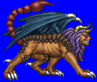
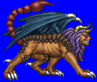
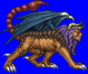
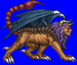

Height: About 2 meters Weight: About 200 lbs.
Habitat: Desert, jungle Origin: India
Meaning: Old Persian "Mantiya-Kwhar", meaning "cannibal"
A man-eating monster with the face of a lion, batlike wings, a tail like that of a sea urchin, and rows of needles along its body. In ancient India, those who became missing were often believed to have fallen prey to the manticore's insatiable appetite for human flesh. In some legends, manticores are able to imitate human speech to more easily lull its victims to complacency.